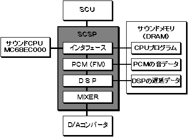
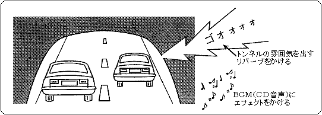
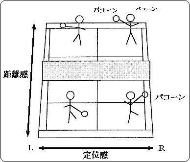

★HARDWARE Manual
★セガサターン概要マニュアル
★HARDWARE Manual
★セガサターン概要マニュアル
図3.25 SCSPシステム構成

No | 項目 | 仕 様 | 備 考 |
|---|---|---|---|
1 | サンプリング周波数 | ・44.1KHz | |
2 | 音声合成方式 | ・PCM,FM方式 | |
3 | 音声処理スロット数 | ・32スロット | |
4 | 波形データフォーマット | ・8bit,16bit形式 | |
5 | 各種機能 | ・エンベロープ | |
6 | 内蔵DSPによる効果 | ・リバーブ、コーラス等 | |
7 | その他の機能 | ・DMAC… 1ch |
SCSPの主な機能を、次に示します。
図3.26 トンネルとBGMのリバーブ

図3.27 テニスゲームにおいての使用例

★HARDWARE Manual
★セガサターン概要マニュアル